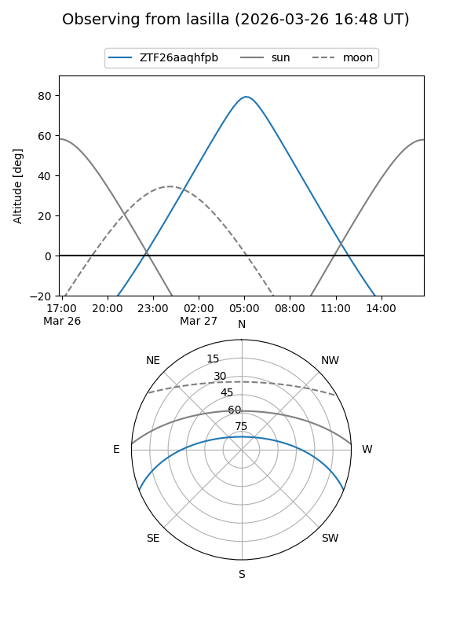
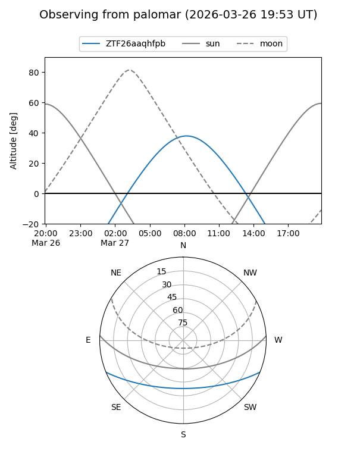

ZTF26aaqhfpb
Target ZTF26aaqhfpb at 2026-03-27 09:18
Aliases and brokers:
FINK: link
Lasair: link
ALeRCE: link
alt names
ZTF26aaqhfpb (ztf,fink_ztf)
Coordinates:
equatorial (ra, dec) = 190.5542,-18.52411
equatorial (HMS+DMS) = 12:42:13.01,-18:31:26.79
galactic (l, b) = (299.8775,+44.29294)
Flags:
Photometry:
last ztfg=17.05
1 ztfg detections
Lightcurve
Visibility


Additional plots